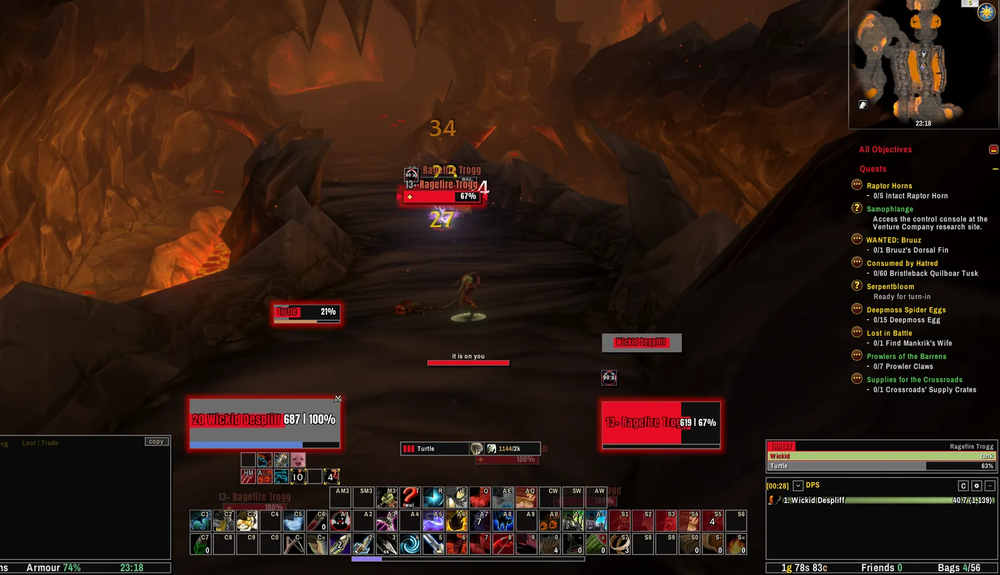
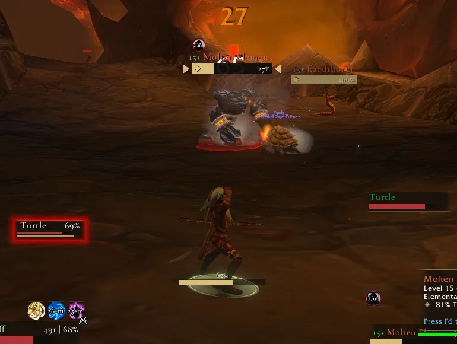
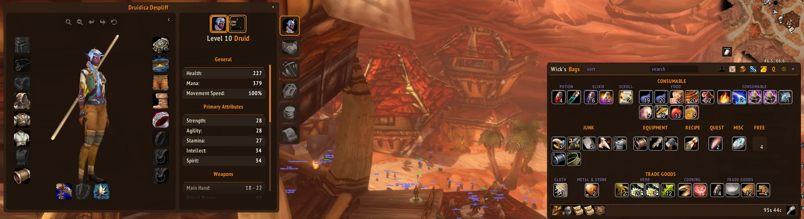
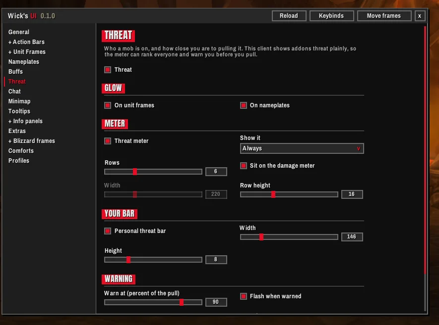
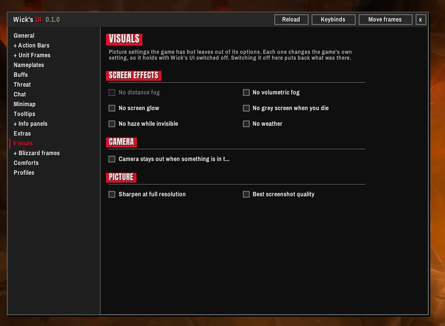
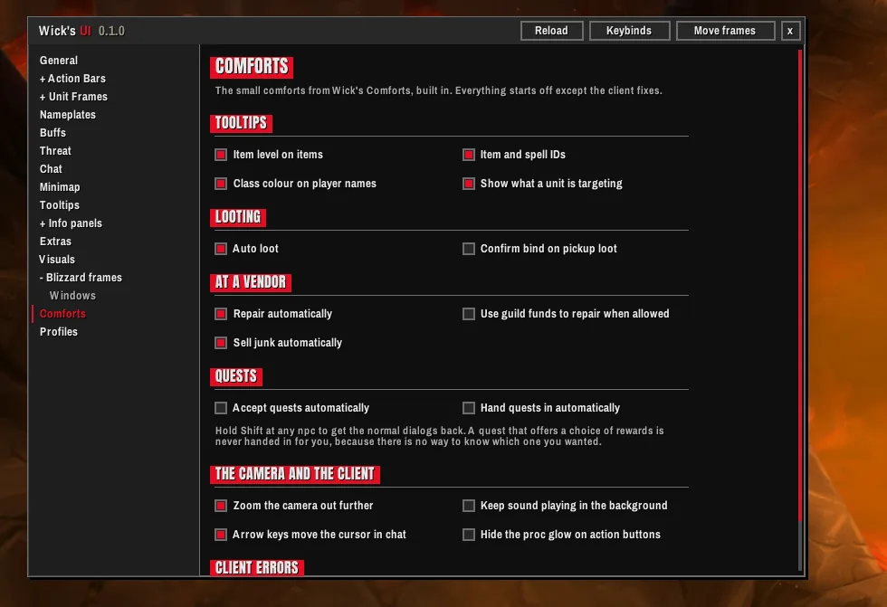
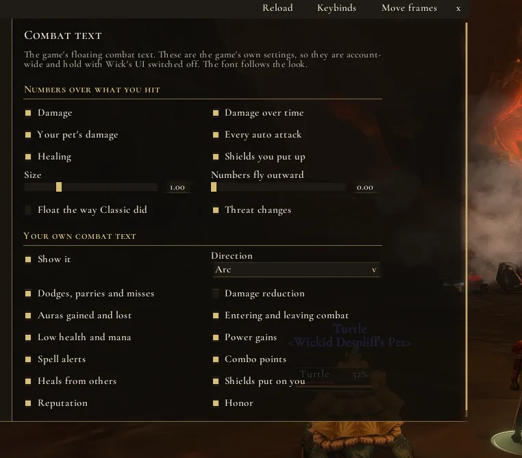

Better Together
Even better with the suite
Every Wick addon shares the same looks, so whichever one you pick, everything on screen matches.


The whole interface, in one look. Action bars, unit frames, nameplates, chat, the minimap and the game's own windows, all drawn together, and every part of it optional.
Ten to start from. Then change the colours, the fonts, the bar textures, the sizes, what every line of text says and where everything sits. The look you end up with is yours.
Real screenshots from the game, nothing mocked up. Hover a number, or a note, to see what it is.
Everything you watch while it goes wrong, in one place and one style.


Enough to read a pull at a glance, and nothing that gets in the way.
Character, spellbook, talents, professions, map, mail, bank, vendors, trainers, friends, guild, the group finder and more, dressed to match. Nothing about how they work is touched.

Switch anything off, and whatever you switch off is left exactly as the game made it.




Take the lot, or only the pieces you want, and set each one the way you like it. Anything you switch off goes back to the game's own.
Built on the game's own action pages and keybindings. Stance and pet bars, fading, and hover keybinding: point at a button and press the key. Spells move up to the new rank when you train it.
Player, target, target of target, focus, pet and bosses. Raid frames carry the healer pieces: a debuff you can dispel in the middle, your own heals over time in the corners, missing health, a border on your target.
Target and focus markers, class marks, an execute highlight and a lock on casts you cannot interrupt.
A ranked meter, your own bar with a pull warning, and glows on frames and plates.
The game's own windows in the look, down to menus and the group finder. The damage meter and swing timers too.
Chat that fits its panel, tabs that fit their names, and a minimap with other addons' buttons tucked into one flyout.
Tooltips in the look, info panels along the screen edge, and XP and reputation bars with the numbers on hover.
A raid marker bar that works in combat, a quieter error line in a fight, an AFK screen, hidden picture settings and fuller combat text controls.
Your own main and accent colours, fonts and outlines, bar textures and sizes, and what every line of text on a frame says and where it sits. A mover for every frame, and profiles to carry the result to your other characters.
From Wick's Comforts: richer tooltips, auto loot, auto repair and junk selling, quests and the camera. Each one off until you turn it on.
A short setup, one question to a page. If you already run an addon that does one of these jobs, it asks which one keeps it, and leaves that part alone if you say so.
Forever limits what addons can do in a fight more than any version before it. Wick's UI was built for those limits from the first line, not patched to fit them.
Health bars, cooldowns and auras stay up to date in combat, where the game keeps some of that information from addons.
Only their look changes. Every button and tab does what it always did. Switch the skins off and, after a reload, the windows are the game's own again.
Anything the game will not allow during combat waits for the fight to end, then happens on its own.
Every Wick addon shares the same looks, so whichever one you pick, everything on screen matches.
Free on CurseForge for WoW Forever. It needs WickCore, also free on CurseForge. Type /wui in game for the settings.